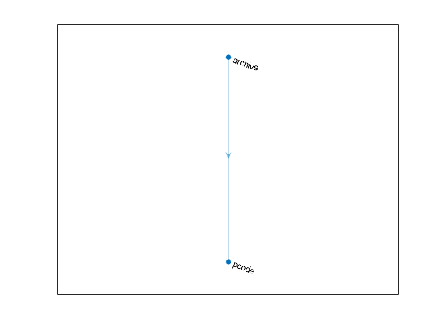

Improve Performance with Incremental Builds
Incremental builds avoid redundant work by skipping tasks that are up to date. A task is up to date if its inputs, outputs, actions, and arguments have not changed since the last time it ran successfully. Skipping up-to-date tasks can reduce the time it takes to run a build.
This topic shows how to create tasks that have inputs and outputs and then run these tasks as part of incremental builds. For an overview of incremental builds, see MATLAB Incremental Builds.
Note
The following two types of tasks define their own inputs and outputs as part of their implementation. You do not need to explicitly specify inputs and outputs for these tasks to take advantage of incremental builds:
Tasks created from built-in task classes in the
matlab.buildtool.tasksnamespace (since R2023b)Tasks created from custom task classes that include the
TaskInputandTaskOutputproperty attributes (since R2025a)
Create and Run Tasks That Support Incremental Builds
In this example, you first create a build file containing two tasks with specified
inputs and outputs. Then, you use the build tool to run the tasks several times. The
example assumes that a source folder exists in your current
folder.
Create Build File
In your current folder, create a build file named
buildfile.m that contains a main function and two local
task functions, named pcodeTask and
archiveTask, corresponding to the
"pcode" and "archive" tasks. (For
illustrative purposes, the "pcode" task in this example is
created using a task function. The recommended practice is to create the task
using the matlab.buildtool.tasks.PcodeTask class.) For the complete code in
the build file used in this example, see Summary of Build File.
Add Main Function. In the build file, define a main function that:
Creates a plan from the task functions
Specifies the inputs and outputs of the
"pcode"and"archive"tasks
Specify the inputs and outputs of the tasks by setting their
Inputs and Outputs properties:
"pcode"task — Set theInputsandOutputsproperties, respectively, toFileCollectionobjects that represent all the.mand.pfiles in thesourcefolder and any of its subfolders. You can createFileCollectionobjects by assigning strings to the properties. You can also use thematlab.buildtool.io.FileCollection.fromPathsorfilesmethod to explicitly createFileCollectionobjects (for instance,plan("pcode").Inputs = files(plan,"source/**/*.m");)."archive"task — Set theInputsproperty to theOutputsproperty of the"pcode"task. (This assignment results in an inferred dependency by making the"archive"task dependent on the"pcode"task.) Set theOutputsproperty to aFileCollectionobject that represents a file namedsource.zipin your current folder.
function plan = buildfile plan = buildplan(localfunctions); plan("pcode").Inputs = "source/**/*.m"; plan("pcode").Outputs = plan("pcode").Inputs.replace(".m",".p"); plan("archive").Inputs = plan("pcode").Outputs; plan("archive").Outputs = "source.zip"; end
Add Task Functions. Specify the tasks in the plan by adding local task functions to the build
file. Add the pcodeTask task function to obfuscate the
inputs of the "pcode" task and create the P-code files in
the same folders as the inputs. Because the Inputs
property of the "pcode" task holds a
FileCollection object, use the paths
method of the FileCollection class to return the paths of the
file collection as a string vector. Then, call the pcode function using a
comma-separated list of the paths.
function pcodeTask(context) % Create P-code files filePaths = context.Task.Inputs.paths; pcode(filePaths{:},"-inplace") end
Add the archiveTask task function to create an
archive of its inputs.
function archiveTask(context) % Create ZIP file task = context.Task; zip(task.Outputs.paths,task.Inputs.paths) end
Summary of Build File
This code shows the complete contents of the file
buildfile.m in your current folder.
function plan = buildfile plan = buildplan(localfunctions); plan("pcode").Inputs = "source/**/*.m"; plan("pcode").Outputs = plan("pcode").Inputs.replace(".m",".p"); plan("archive").Inputs = plan("pcode").Outputs; plan("archive").Outputs = "source.zip"; end function pcodeTask(context) % Create P-code files filePaths = context.Task.Inputs.paths; pcode(filePaths{:},"-inplace") end function archiveTask(context) % Create ZIP file task = context.Task; zip(task.Outputs.paths,task.Inputs.paths) end
Visualize the Inferred Dependency
Create a dependency graph of the build plan using the plot method. Even though you did not specify an explicit
dependency in the build file, the graph displays a dependency. The
"archive" task has an inferred dependency on the
"pcode" task because you specified the inputs of the
"archive" task by using the outputs of the
"pcode" task. Like explicit dependencies that you specify
by setting the Dependencies property of a task, inferred
dependencies of a task must run before the task runs.
plan = buildfile; plot(plan)

Run Incremental Builds
Because the tasks in this example have specified inputs and outputs, the tasks can run as part of incremental builds. If the inputs and outputs of a task to run have not changed since the last time it ran, the build tool skips the task. Otherwise, the build tool runs it.
Trigger the initial build by running the "archive" task.
Because the "archive" task depends on the
"pcode" task, the build tool runs the
"pcode" task before running the
"archive" task.
buildtool archive** Starting pcode ** Finished pcode ** Starting archive ** Finished archive
Run the "archive" task again. The build tool skips both of
the tasks because none of the inputs or outputs of the tasks have changed since
the last run.
buildtool archive** Skipped pcode (up-to-date) ** Skipped archive (up-to-date)
Add a file to the source folder, and then rerun the
"archive" task. The build tool first runs the
"pcode" task because its inputs have changed between
consecutive builds. The build tool then runs the "archive"
task because its inputs are the outputs of the "pcode" task,
which have changed.
fclose(fopen(fullfile("source","newFile.m"),"w")); buildtool archive
** Starting pcode ** Finished pcode ** Starting archive ** Finished archive
Delete the ZIP file created by the "archive" task, and then
run the task. The build tool skips the "pcode" task because
none of its inputs or outputs have changed. However, the build tool runs the
"archive" task because its output has changed since the
last time it ran successfully.
delete("source.zip") buildtool archive
** Skipped pcode (up-to-date) ** Starting archive ** Finished archive
MATLAB Incremental Builds
Build tasks typically operate on inputs and generate outputs. For example, a task
might build a binary MEX file from a C++ source file. In this case, the source file
is the task input and the MEX file is the task output. If you want the build tool to
skip a task when it is up to date, specify the inputs or outputs of the task. If the
DisableIncremental property of the task is
false, the build tool keeps track of the inputs and outputs
every time the task runs and skips the task if they have not changed. If a task does
not specify inputs or outputs, the build tool does not skip it.
Inputs and Outputs
To specify the inputs and outputs of a task, set its
Inputs and Outputs properties. For
example, you can set the properties to a vector of matlab.buildtool.io.FileCollection objects.
The build tool validates that specified inputs of a task exist before running the task and that specified outputs of a task exist after running the task. If validation of task inputs or outputs fails, the build tool fails the task.
Cache Folder
When you run a build, the build tool creates a cache folder named
.buildtool in the plan root folder if it does not exist.
The cache folder includes information, such as task traces, that enables
incremental builds. A task trace is a record of the
inputs, outputs, actions, and arguments of a task from its last successful run.
If you create a task with the DisableIncremental property
set to true, then the build tool does not create a trace for
it.
Do not put the cache folder under source control. To exclude the cache folder
from source control, add its name to your source control ignore list. For
example, append the cache folder name to the .gitignore file
in the plan root
folder.
writelines(".buildtool",".gitignore",WriteMode="append")
Up-To-Date Check
Before running a task that has inputs or outputs and that has a
DisableIncremental property value of
false, the build tool references the cache folder to
check whether the task is up to date. If the check passes, the build tool skips
the task. Otherwise, the build tool runs the task.
For the check to pass, the inputs, outputs, actions, and arguments of the task must be the same as the last time the task ran successfully. To determine whether a file has changed, the build tool examines the contents of the file (not its timestamp).
See Also
Functions
Classes
matlab.buildtool.io.FileCollection|matlab.buildtool.TaskInputs|matlab.buildtool.TaskOutputs|matlab.buildtool.Task